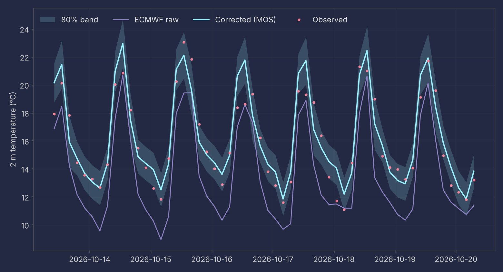

Correcting a weather forecast for one station

Global models such as ECMWF are excellent at large scales, but at a single station they can be several degrees off. In Quito the raw 2 m temperature from ECMWF is usually too cold, because the model grid cell averages valleys and mountains that the station does not see. Model output statistics (MOS) fixes this with a regression that learns, from past forecasts and observations, how the model relates to that specific place.
This tutorial follows the method I use in my hourly forecast for the Iñaquito station. You will build the predictors, fit one regression per hour of day, and evaluate it the honest way: walking forward in time and comparing against the diurnal climatology.
What you need
observations.csvwith columnstime, temp_c: station observations in UTC.forecasts.csvwith columnsinit_time, valid_time, ecmwf_c: one row per forecast run and lead time.- Python with
pandasandnumpy. For step 1 alsoecmwf-opendata,xarrayandcfgrib.
MOS needs history. Start archiving forecasts now; after about a month you can train, and after two months the results become stable.
Step 1: Archive ECMWF forecasts at your station
ECMWF publishes its open forecasts four times a day. This script downloads the 2 m temperature,
extracts the nearest grid point and appends it to forecasts.csv. Run it on a schedule
(cron or a GitHub Actions workflow) so the archive grows by itself.
from ecmwf.opendata import Client
import pandas as pd
import xarray as xr
client = Client(source="aws") # public mirror, no account needed
client.retrieve(
type="fc",
param="2t", # 2 m temperature
step=list(range(0, 147, 3)), # every 3 h out to about 6 days
target="ecmwf_2t.grib2",
)
ds = xr.open_dataset("ecmwf_2t.grib2", engine="cfgrib")
lat, lon = -0.18, -78.49 # replace with your station
point = ds["t2m"].sel(latitude=lat, longitude=lon, method="nearest") - 273.15
run = point.to_dataframe(name="ecmwf_c").reset_index()
run["init_time"] = pd.to_datetime(ds["time"].values)
run["valid_time"] = pd.to_datetime(run["valid_time"])
run[["init_time", "valid_time", "ecmwf_c"]].to_csv(
"forecasts.csv", mode="a", header=False, index=False)
Step 2: Settings and data
Four numbers control the method. The climatology uses the last 30 days, the regression is trained on the last 60, the latest observed anomaly fades with a 36-hour time scale, and an hour of day needs at least 20 cases before we trust its fit.
import numpy as np
import pandas as pd
obs = pd.read_csv("observations.csv", parse_dates=["time"]).set_index("time")["temp_c"].sort_index()
fc = pd.read_csv("forecasts.csv", parse_dates=["init_time", "valid_time"])
CLIM_DAYS = 30 # window for the hour-of-day climatology
TRAIN_DAYS = 60 # trailing window used to fit the regression
DECAY_H = 36 # e-folding time of the observed anomaly (hours)
MIN_SAMPLES = 20 # minimum cases per hour before trusting a fit
Step 3: The baseline that matters
Near the equator the diurnal cycle dominates temperature. Persistence (tomorrow equals today) is a weak benchmark; the mean temperature for each hour of day over the last month is a strong one. A model has skill only if it beats this climatology.
def climatology(obs, end, days=CLIM_DAYS):
"""Mean observation by hour of day over the window that ends at `end`."""
window = obs[(obs.index > end - pd.Timedelta(days=days)) & (obs.index <= end)]
return window.groupby(window.index.hour).mean()
Step 4: Predictors known at forecast time
For every forecast run we add three predictors: the raw ECMWF value, the climatology for that
hour, and the latest observed anomaly, decayed with lead time. The anomaly carries information
the model does not have (a cloudy morning, a cold front that arrived early), and the decay
stops it from dominating days ahead. Everything is computed with data available at
init_time, so there is no leakage from the future.
def add_predictors(run, obs, init):
"""Predictors that are known at initialization time, nothing from the future."""
clim = climatology(obs, init)
past = obs[obs.index <= init]
last_time, last_value = past.index[-1], past.iloc[-1]
last_anomaly = last_value - clim.get(last_time.hour, np.nan)
hours_ahead = (run["valid_time"] - last_time).dt.total_seconds() / 3600
run = run.copy()
run["hour"] = run["valid_time"].dt.hour
run["clim_c"] = run["hour"].map(clim)
run["anom_c"] = last_anomaly * np.exp(-hours_ahead.clip(lower=0) / DECAY_H)
return run
table = pd.concat(
add_predictors(run, obs, init)
for init, run in fc.groupby("init_time")
if (obs.index <= init).sum() > 0
)
table["obs_c"] = table["valid_time"].map(obs)
FEATURES = ["ecmwf_c", "clim_c", "anom_c"]
Step 5: One regression per hour of day
The model error at 15:00 is not the error at 03:00: afternoon convection and night-time cooling behave differently. Fitting one least-squares regression per hour of day captures that, and an hour without enough cases falls back to climatology.
observed = a + b · ECMWF + c · climatology + d · anomaly
def fit(train):
"""One least-squares regression per hour of day."""
coefs = {}
train = train.dropna(subset=FEATURES + ["obs_c"])
for hour, group in train.groupby("hour"):
if len(group) < MIN_SAMPLES:
continue
X = np.column_stack([np.ones(len(group)), group[FEATURES]])
coefs[hour], *_ = np.linalg.lstsq(X, group["obs_c"], rcond=None)
return coefs
def predict(run, coefs):
X = np.column_stack([np.ones(len(run)), run[FEATURES]])
pred = np.array([X[i] @ coefs[h] if h in coefs else np.nan
for i, h in enumerate(run["hour"])])
# Fall back to climatology when an hour has no fit yet
return np.where(np.isnan(pred), run["clim_c"], pred)
Step 6: Walk-forward evaluation
For each forecast run, train only on cases whose observation was already known at that time, then predict the run. This reproduces what happens in operation. The first 30 days are skipped because the climatology and the regression are still filling up.
results = []
for init, run in table.groupby("init_time"):
train = table[(table["valid_time"] <= init) &
(table["init_time"] >= init - pd.Timedelta(days=TRAIN_DAYS))]
coefs = fit(train)
run = run.copy()
run["mos_c"] = predict(run, coefs)
results.append(run)
scored = pd.concat(results).dropna(subset=["obs_c", "clim_c"])
scored = scored[scored["init_time"] >= scored["init_time"].min() + pd.Timedelta(days=30)]
for name, column in [("ECMWF raw", "ecmwf_c"), ("Climatology", "clim_c"), ("MOS", "mos_c")]:
mae = (scored[column] - scored["obs_c"]).abs().mean()
print(f"{name:12s} MAE = {mae:.2f} °C")
print(f"{len(scored)} verified cases")
Results for Quito
With six months of real data from the Iñaquito station (April to October 2026, 2107 verified forecasts of hourly temperature) the script prints:
| Method | Mean absolute error |
|---|---|
| ECMWF raw | 2.70 °C |
| Diurnal climatology (30 days) | 1.19 °C |
| MOS (this tutorial) | 0.98 °C |
The raw model error drops by almost two thirds. The more interesting number is the gain over climatology, about 0.2 °C: that is the part of the forecast that comes from the weather, not from the average day.
Going further
- Uncertainty. Take the 80th percentile of the absolute training residuals per hour and draw it as a band. Check that about 80% of observations fall inside it.
- More predictors. A regional model (WRF) or ECMWF cloud cover helps most in the afternoon, the hardest hours in the Andes.
- Independent samples. If you rerun the same ECMWF cycle every hour, keep one row per run and valid time, or the duplicated cases will inflate your scores.
- Regime changes. A 60-day window adapts slowly when the season changes. The anomaly predictor softens this, but watch the error in transition months.